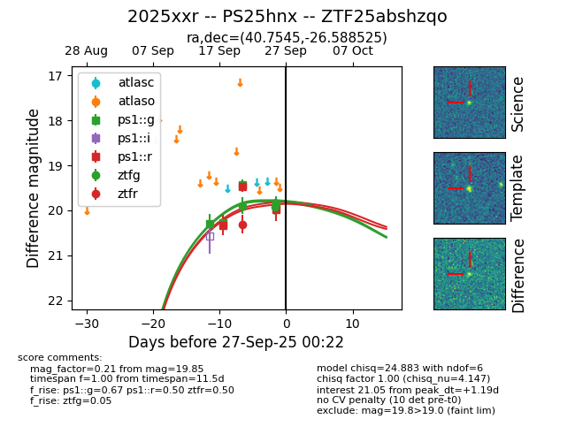
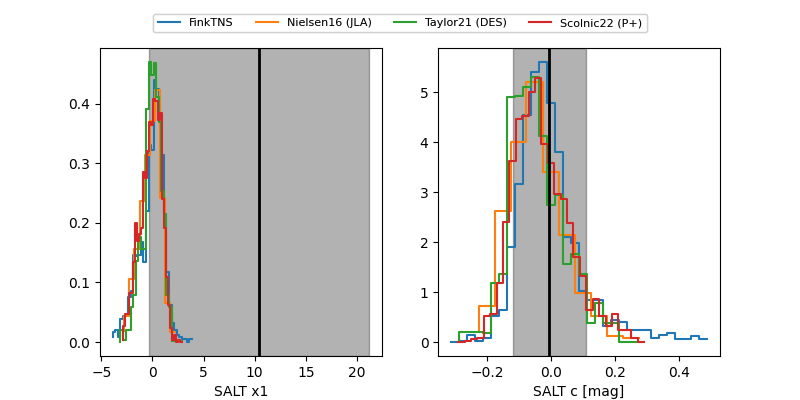

FINK: ZTF25abshzqo
Lasair: ZTF25abshzqo
ALeRCE: ZTF25abshzqo
TNS: 2025xxr
YSE: 2025xxr
2025xxr (yse,tns)
PS25hnx (panstarrs)
ZTF25abshzqo (ztf,fink)
equatorial (ra, dec) = (40.7545,-26.58853)
galactic (l, b) = (218.1162,-65.15953)


last ps1::g=19.85, ps1::r=19.99, ztfg=19.92, ztfr=20.31
4 ps1::g, 3 ps1::r, 2 ztfg, 1 ztfr detections